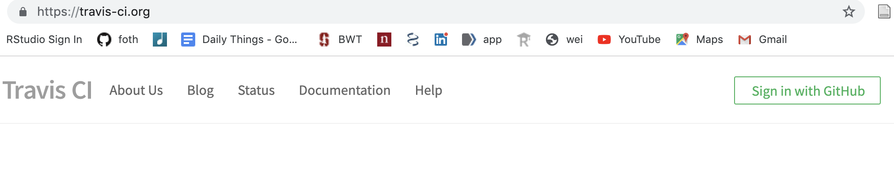
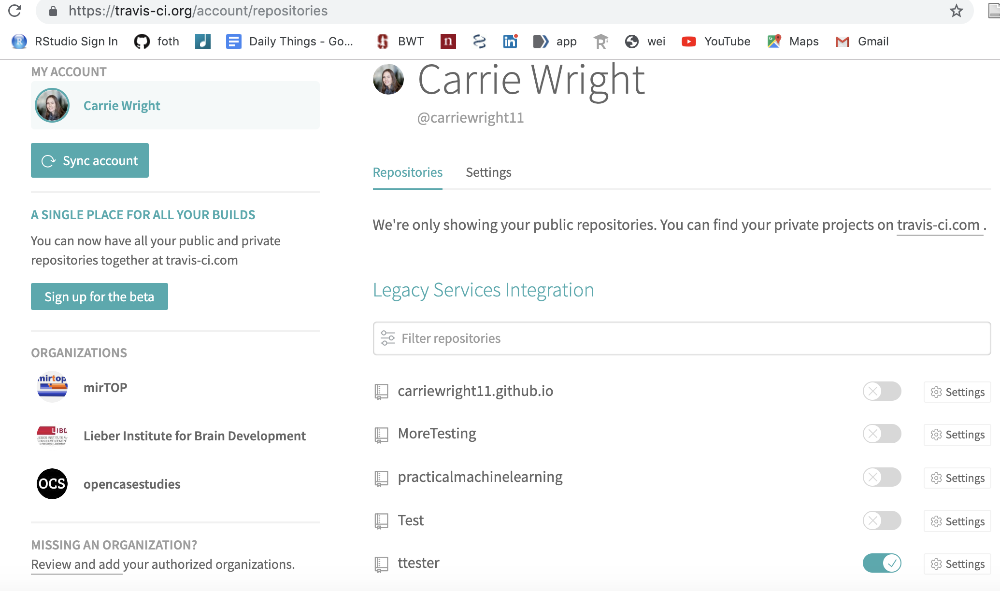
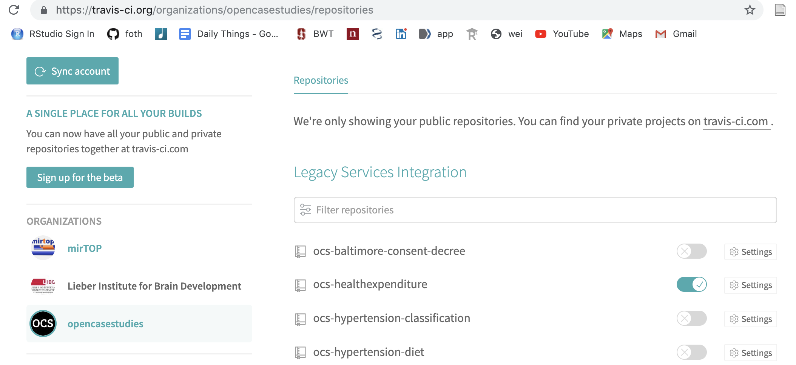
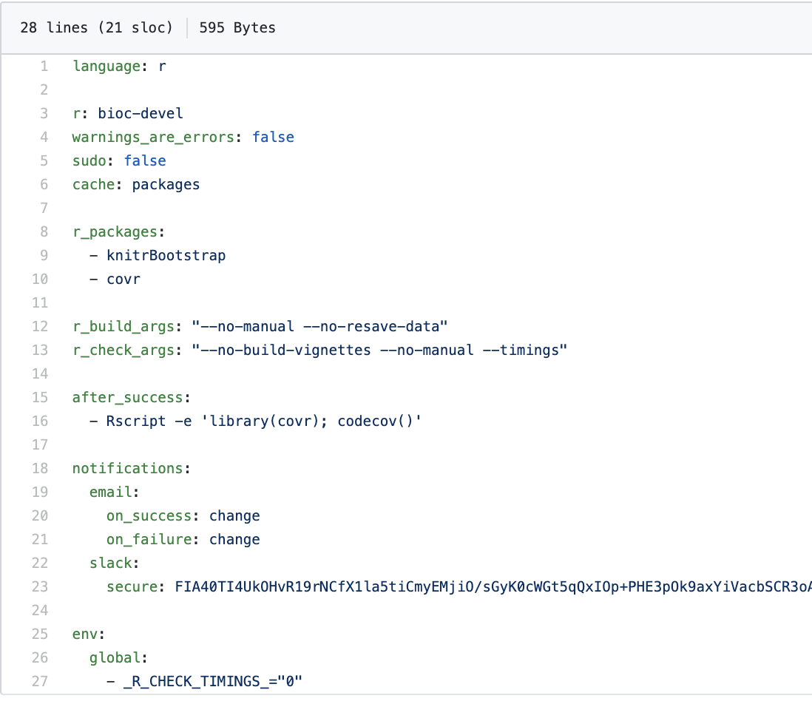
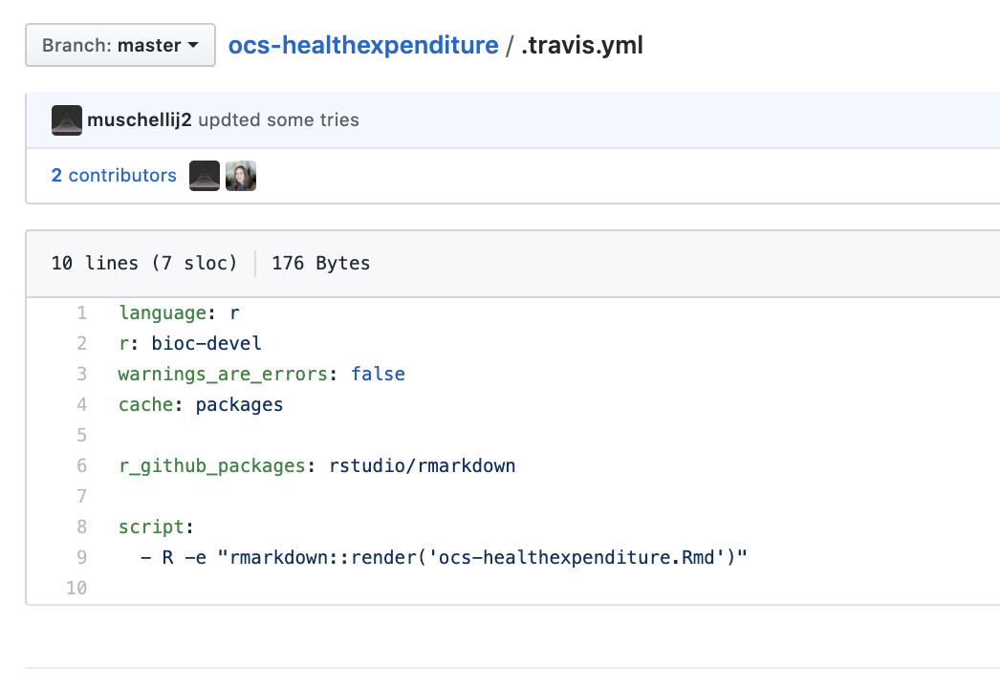
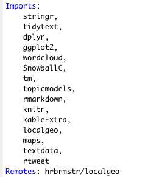
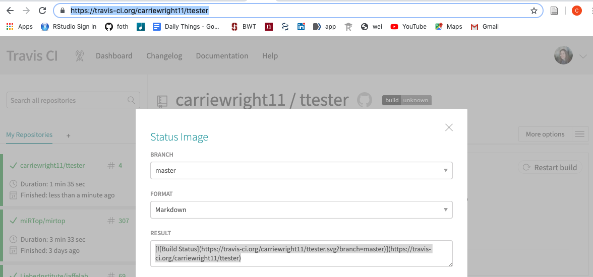
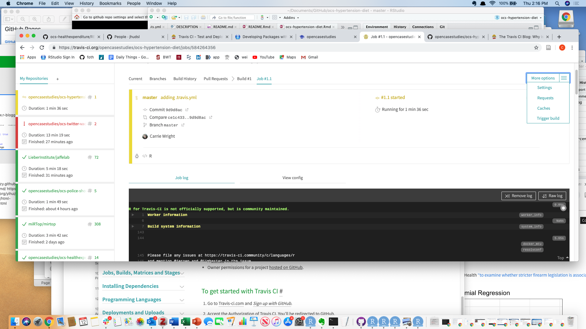
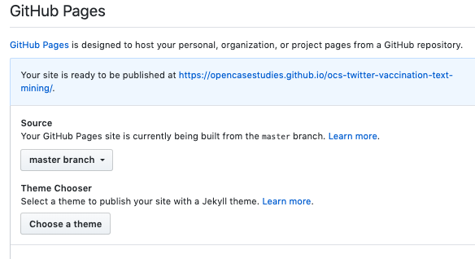
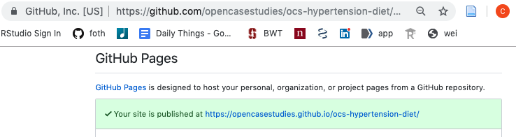

What is Travis? Is this a person? Why is everyone talking about Travis???
Have you ever heard someone say that they used Travis to test their package? Who is this amazing code guru?!

What is Travis? Is this a person? Why is everyone talking about Travis???
Have you ever heard someone say that they used Travis to test their package? Who is this amazing code guru?!

Turns out Travis is not a person after all, although there is a pretty awesome mascot that looks like a person.
Check here if you want to know more about why Travis is called Travis
This was actually a company in Berlin, Germany that was founded in 2001 that was recently acquired by Idera.
It is really a Continuous Integration and Continuous Deployment platform.
*like pushing your code to the master branch on github regularly
Typically programmers build their code and complete tests on their code before they commit
compilation etc.
***Travis helps automate this process***
Basically you are getting your code ready to be deployed at all times - ie it can build without issues.
Travis-CI can directly link to github - thus it can also deliver or deploy websites of your code through github/github pages. We will talk more about that later.
https://blog.travis-ci.com/2019-05-30-setting-up-a-ci-cd-process-on-github
 ref
ref
Yes, Travis CI works on private and public projects!
We will show you how to add Travis CI to a repo without a package.
If you have a package look at one of these other tutorials: https://docs.travis-ci.com/user/tutorial/ https://github.com/lcolladotor/r-travis https://github.com/craigcitro/r-travis/wiki https://neuroconductor.org/tutorials/getting_ready_for_submission
Adding Travis CI to a package can be a tad easier/faster with the right tools.



 Commit and push to github!!

Manually add a field called “Remotes” specifying where the package is on github 



Commit and push all your changes!
Your website URL is the one listed in your github settings 
For more info check here.
You can also create only the DESCRIPTION file manually, then use the usethis package to create yml files for travis and github pages
library(usethis) usethis::use_readme_rmd() # if you only have an README.md file # this will also add the travis badge # make sure you update the .md and .Rmd files! usethis::use_travis() # this will create the .travis.yml file # this will also pull up https://travis-ci.org to allow you activate this repo easily usethis::use_pkgdown() # this will create .Rbuildignore and _pkdown.yml files
The wikipedia page has additional information on Travis CI in general.
This link will tell you more about how Travis CI works.
Remember you can use the usethis package to easily use pkgdown and travis for a package. This did not work as easily in our case as we were adding Travis CI and pkgdown to repos without a package. Here is a great tutorial.
Here is a list of common build problems.